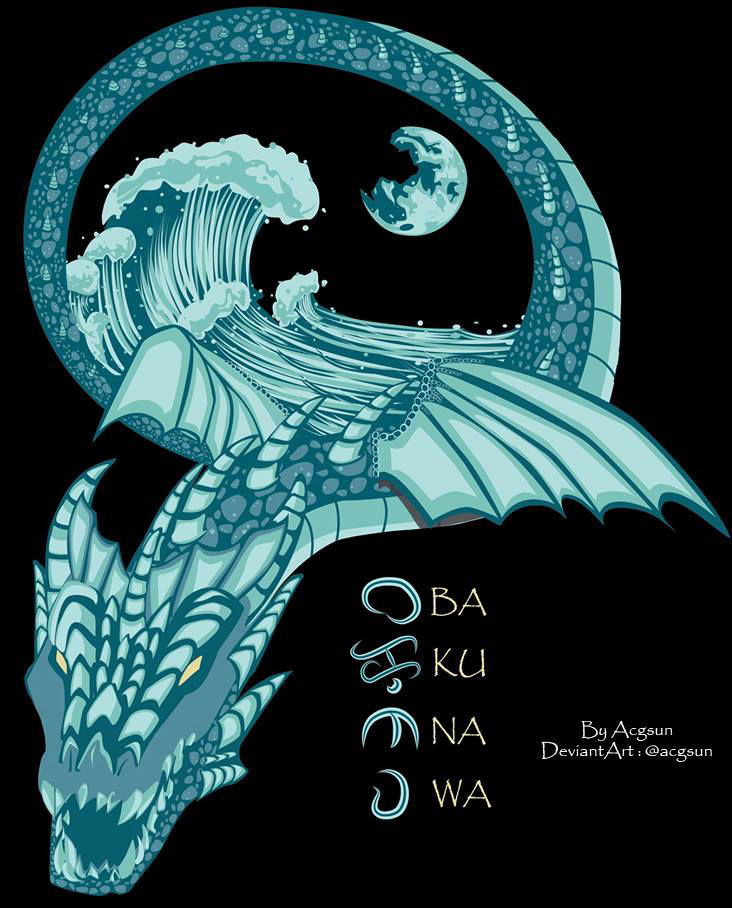

There are numerous ways available in which the Appreciate A Dragon Day can be celebrated. As it is a Day for literature, you can indulge in reading books that let you know more about the dragons, its history, origin, and historical significance. Let out your creativity to paint, draw, or make dragon pictures. Tell your children a story of the dragons. You can even organize a dragon puppet show in the nearby location. Start collecting stuffed dragons and you can take pictures and share it on the social media using the hashtag #AppreciateADragonDay. Check out this DeviantArt! You can make your own here!
The Bakunawa, also spelled Bakonawa, Baconaua, or Bakonaua, is a dragon in Philippine mythology that is often represented as a gigantic sea serpent. It is believed to be the cause of eclipses. It appears as a giant sea serpent with a mouth the size of a lake, a red tongue, whiskers, gills, small wires at its sides, and two sets of wings, one is large and ash-gray while the other is small and is found further down its body. The Visayan (Cebuano) term bakunawa is the direct translation of the word 'eclipse'. Binakunawa is a verb to mean "to cause an eclipse". Tales about the Bakunawa say that it is the cause of eclipses. During ancient times, Filipinos believe that there are seven moons created by Bathala to light up the sky. The Bakunawa, amazed by their beauty, would rise from the ocean and swallow the moons whole, angering Bathala and causing them to be mortal enemies.
